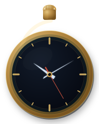

Raccogli - Cataloga - Preserva
Molti requisiti si ergono dinnanzi a una pratica esistenziale sufficientemente ben condotta.
2026
Capibara
La contraddizione delle contraddizioni
Quando la logica non può più niente, il mistico prende parola: un sacro dire di sì contro la volontà di morte delle classi dominanti.
Marzo
2026
Capibara
Bonapartismo strutturale
Bonapartismo, supereroi e nuovi sacerdoti: l'illusione del salvatore che maschera il potere della classe dominante.
Marzo
2026
Capibara
Una riforma di lungo percorso
D’Orsi al CPA: la riforma della magistratura è l'ultimo atto della lotta di classe dall'alto verso il basso.
Marzo
2026
Capibara
Etica dell’inflazione
Il denaro come confine ontologico: a ogni aumento dei prezzi segue una deflazione dell’essere.
Febbraio
2026
Capibara
Una riflessione sulla riforma della magistratura
Dietro il referendum, la vera frattura: uno Stato che abdica al mercato trasformando il diritto alla difesa in profitto.
Febbraio
2026
Capibara
A pensare si fa peccato, ma ci si azzecca
Dal "gioco del dare ragioni" allo storytelling del mercato, dove i modelli predittivi rischiano di sostituire la razionalità.
Gennaio
2026
Capibara
Verità e finzione in senso sociale
Oltre la finzione: la propaganda come ristrutturazione della razionalità.
Gennaio
2026
Capibara
AI: Artificio Intelligente
Una riflessione tecnico-filosofica sul concetto di Intelligenza Artificiale: dalla Macchina di Turing all'intenzionalità.
Gennaio
2026
Marxismo Oggi
Intelligenza Artificiale: un’altra mente nel mercato?
Gennaio
2026
Premio Alberoandronico
Vai all'Albo d'oro →A Bologna
Selezionata nella XV Edizione del Premio Alberoandronico.
Se ti amassi
Selezionata nella XVI Edizione del Premio Alberoandronico.
Premio Amori sui generis
Vai ai risultati della VI Edizione →Apollineo e Dionisiaco
Selezionata nella VI Edizione del Premio Amori sui generis
Tesi di Laurea Magistrale
Link al testo su Academia →Grounding and Truth-making: A critical discussion of neo-Aristotelianism
Neo-Aristotelianism is a philosophical framework that has increasingly been developed in the last two decades. Its central topic is the employment of the notions of grounding, essence and truth-making in order to explain ontological dependence and truth. This thesis is about the main aspects and problems of these notions. The chapters of which it is composed can be divided into two parts. The first two are about the meta-metaphysical framework. We will first introduce Carnapian deflationism and neo-Aristotelianism. The aim is to make their main features explicit and to explain how Carnapian deflationism can deal better with the role of existence and the scope of metaphysics. In particular, we will focus on Thomasson’s easy ontology. The other two chapters are about how the notions of essence, grounding and truth-making are employed. In the third chapter we will introduce grounding and we will focus on Kit Fine’s theory in order to explain its role. We will then deal with some of the problems that have made other philosophers doubt about the feasibility of Fine’s approach. In the fourth chapter we will explain what truth-making is, with particular attention to Kit Fine’s and Mark Jago’s theories. Again, we will focus on some of the most important problem these approaches meet. During the whole path through the four chapters, Thomasson’s easy ontology will help us understand how deflationism can be employed to criticize the topics we will deal with.